Sprint3
Instal·lació Domini AD
Una vegada dintre de l'administrador del servidor anirem a afegir rols i característiques
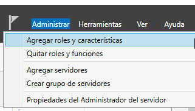
Afegirem controladors de DNS i active directori
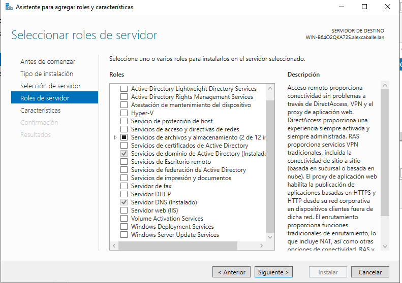
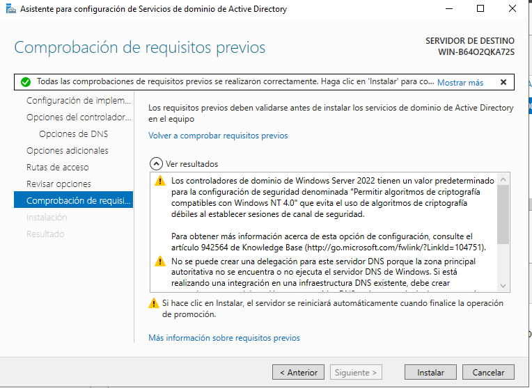
Ens sortirà una notificació de descàrrega
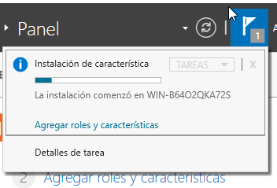
I quan acave una notificacio de configuracio (clicarem)
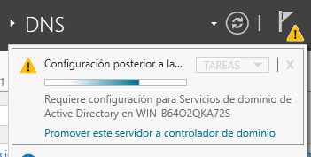
I escomençarem a configurar-lo
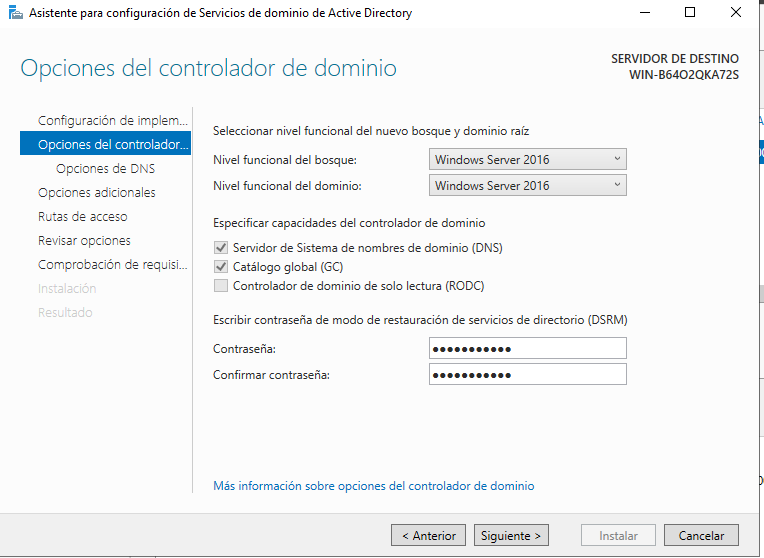
Li posarem nom (important per després)
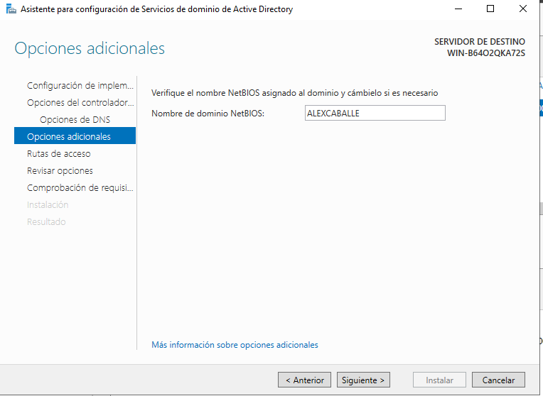
Unir equips al domini
Entrarem a un client Windows, configuració i Obtener acceso a trabajo
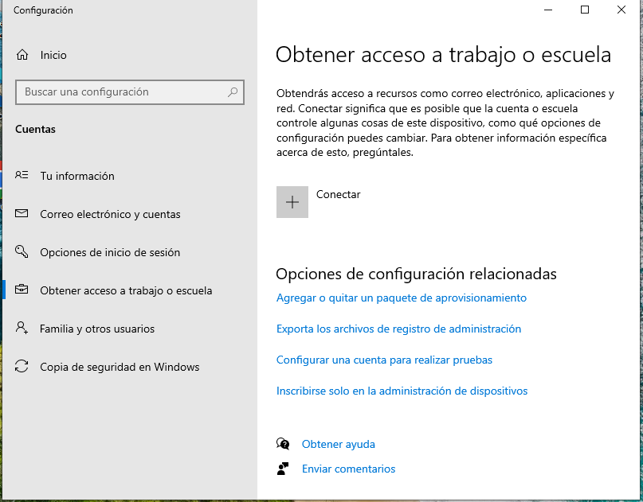
Connectar i unir este dispositivo a un domino AD
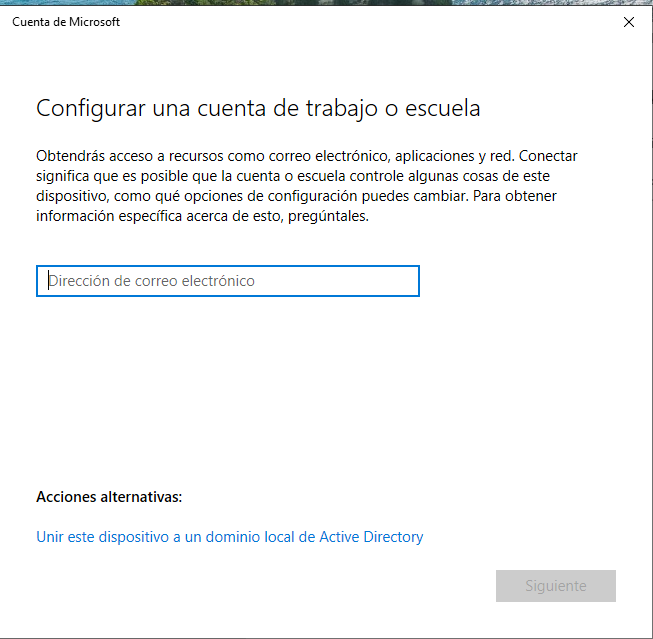
Posarem el no de AD i la extensió seleccionada
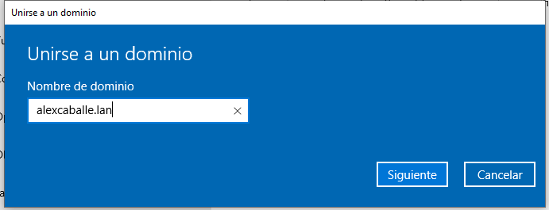
Posarem les credencials de l'usuari creat anteriorment
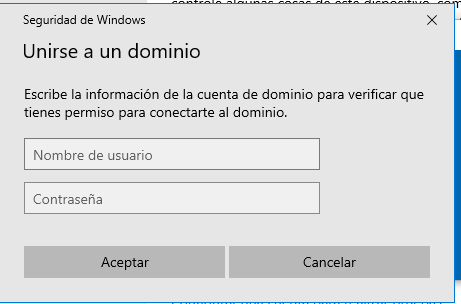
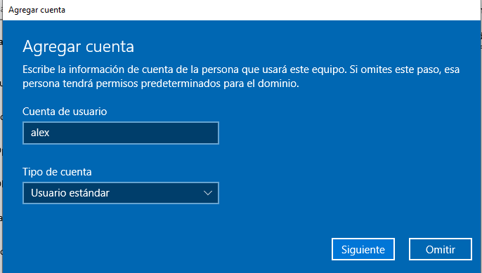
Reiniciarem i finalment i a tindrem accés al servidor AD
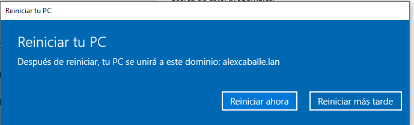